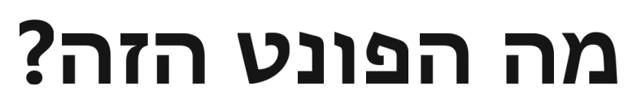
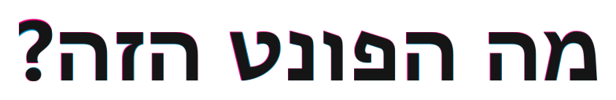
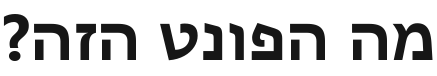
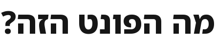

ל-Windows · גרסת בטא
מה הפונט הזה?
מדביקים צילום מסך, וגופנומטר מוצא את הפונט הכי קרוב מתוך הפונטים שכבר מותקנים אצלכם. עברית קודם כול, תוך שניות, ובלי לגלול פונט־פונט.
ל-Windows 10 ו-11 רוצים לנסות את הבטא כבר עכשיו? כתבו לי
זה כל מה שצריך לזכור. אין הגדרות, אין חשבון, אין העלאה לשום מקום.
הדגמה
ככה זה נראה
צילום מסך אחד, ותוצאה אמיתית שגופנומטר החזיר מתוך ספרייה של 1,288 פונטים. אחר כך תורכם: גררו את הקו בהשוואה, או בחרו מועמד אחר.

גם בלי להקליד הוא קורא את האותיות בעצמו. עם הקלדה הוא יודע בדיוק איזו אות היא איזו.
זיהוי ודאי
Gisha
מקור מול חיקוי

מימין הצילום, משמאל אותו טקסט בפונט שנבחר. גררו את הקו. חופף רק בצילום רק בפונט
הקרובים ביותר
- 1

GishaBold93.8% - 2TahomaBold82.5%
- 3

Noto Sans HebrewExtraBold79.7% - 4Simple CLMBold76.5%
איך זה עובד
שלושה צעדים, אפס גלילה
-
1
מדביקים
צילום מסך, תמונה או קובץ. מספיקה שורה אחת. אין צילום מוכן? WinShiftS מצלם אזור מהמסך ישר ללוח.
-
2
מקלידים
מה כתוב בשורה. לא חובה, אבל זה הופך ניחוש לזיהוי: כל אות נמדדת מול אותה אות בכל פונט.
-
3
מקבלים
את הפונט, או את הכי קרובים אליו, עם אחוז התאמה והשוואה צמודה לצילום.
מה מיוחד בו
נבנה בשביל מי שעובד בעברית
- מחפש בפונטים שכבר יש לכם
- הוא לא שולח אתכם לקנות פונט. הוא עובר על הספרייה שמותקנת אצלכם, ומוצא פונט שאפשר לעבוד איתו מיד. אפשר להוסיף לחיפוש גם תיקיות של פונטים שלא מותקנים.
- אומר כשהוא לא בטוח
- החותמת "בול!" מופיעה רק כשיש התאמה ברורה. בכל מקרה אחר תקבלו את המועמדים הקרובים והשוואה צמודה, וההחלטה הסופית נשארת של העין שלכם.
- עברית קודם כול
- נבנה סביב האותיות העבריות, יודע להתעלם מניקוד, ומזהה גם אותיות לטיניות.
- הצילומים לא יוצאים מהמחשב
- כל הזיהוי קורה אצלכם. אין חשבון, אין העלאה לשרת ואין מעקב.
- מסתדר עם צילומים מבולגנים
- כמה שורות, רקע עמוס או טקסט מוטה: הוא מוצא את השורות, מיישר, ומבודד את האותיות מהרקע. לחיצה על שורה בוחרת אותה.
- וכשהפונט לא אצלכם
- הוא יגיד שאין התאמה ודאית, יציע את הקרובים בסגנון, ויוכל לחפש גם בפונטים החופשיים בעברית של Google Fonts.
שאלות
מה שבדרך כלל שואלים
על אילו מחשבים זה עובד?
Windows 10 ו-Windows 11, במחשבים של 64 ביט. אין גרסה למק או לטלפון, לפחות בינתיים.
הוא מזהה רק פונטים שמותקנים אצלי?
קודם כול כן, וזה בכוונה: ככה תמצאו פונט שכבר יש לכם ואפשר לעבוד איתו מיד. אפשר להוסיף לחיפוש גם תיקיות של פונטים שלא מותקנים.
אם הפונט מהצילום לא נמצא אצלכם, גופנומטר יגיד שאין התאמה ודאית, יציע את הקרובים אליו בסגנון, ויוכל לחפש גם בפונטים החופשיים בעברית של Google Fonts.
הצילומים שלי נשלחים לאנשהו?
לא. כל הזיהוי קורה במחשב שלכם, בלי חשבון ובלי שרת. התוכנה מתחברת לרשת רק אם תבקשו לחפש בפונטים החופשיים, וגם אז היא רק מורידה פונטים. הפרטים המלאים במדיניות הפרטיות.
למה כדאי להקליד מה כתוב בתמונה?
כי אז הוא יודע בדיוק איזו אות היא איזו, ומשווה כל אות לאותה אות בכל פונט. בלי הקלדה הוא קורא את האותיות בעצמו, וזה עובד, אבל ההקלדה הופכת ניחוש לזיהוי.
זה עובד גם על אנגלית? ומה עם ניקוד?
כן. גופנומטר נבנה סביב העברית, אבל מזהה גם אותיות לטיניות. ניקוד הוא מזהה ומתעלם ממנו מעצמו, ואפשר לבקש ממנו להשוות גם אותו.
מצאתי את הפונט. מותר לי להשתמש בו?
לא בהכרח. הזיהוי לא אומר כלום על הרישיון של הפונט. לפני שימוש, ובמיוחד בעבודה מסחרית, בדקו את תנאי הרישיון שלו.
הוא טעה. מה עושים?
קודם כול נסו לסמן שורה אחת ולהקליד מה כתוב בה. אם עדיין לא, שלחו לי את הצילום: hacker4960 בג'ימייל. זו גרסת בטא, וכל צילום כזה עוזר לשפר אותו.